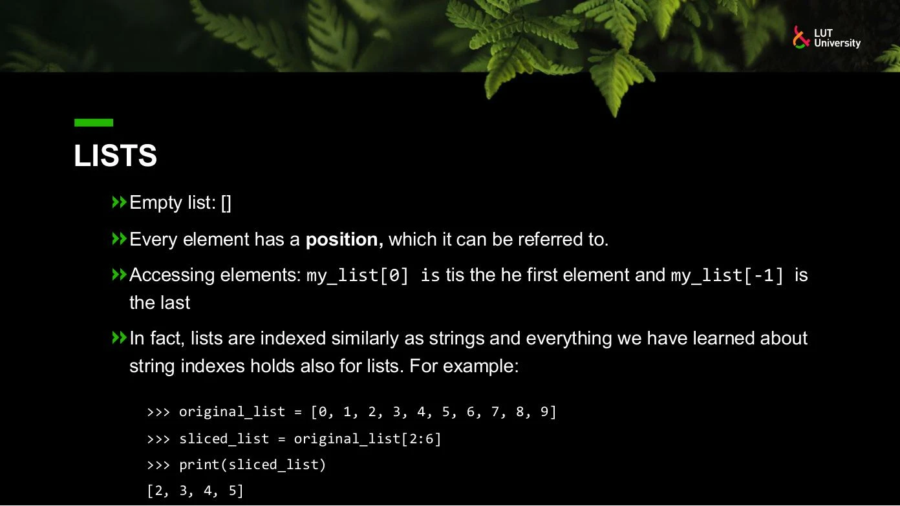
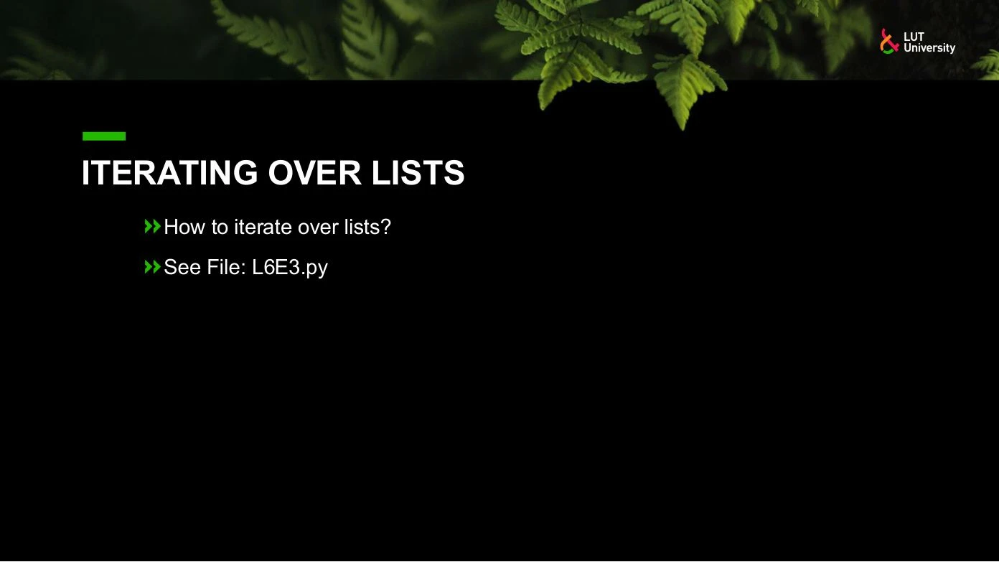
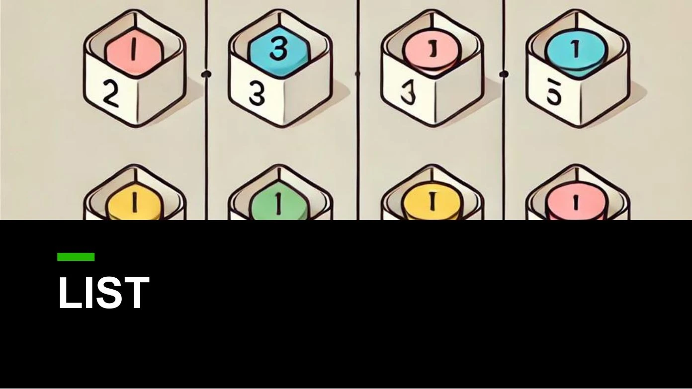

CT60A0250 编程基础 · 第 08 / 18 讲
⑧ 列表、矩阵与元组
Lists, Matrices and Tuples
所属章节：第 6 章 类、列表与矩阵
资料来源 · 6 项 / 已附 0 项
Chapter 6 - Part 4 - List.pdf未附原文件Chapter 6 - Part 5 - List Builtins and Methods.pdf未附原文件Chapter 6 - Part 6 - Matrix.pdf未附原文件tuples.pdf未附原文件Mutable_vs _immutable .pdf未附原文件12_Chapter 6_1_Chapter 6 Code Examples_L6E5.py未附原文件
未附文件仅列原始名称；版本与核对日期由维护者登记。
本节定位
前面的变量一次只能装一个值。这一讲引入容器：列表装一串会变的数据，矩阵装二维表格，元组装一组不该变的值。它们几乎出现在后面每一讲——文件读进来是列表，CSV 是列表的列表，字典的值常常是列表。
上一讲的对象与这一讲的列表关系密切：列表本身就是对象，append、sort 都是它的方法。下一讲把这些数据落到文件里，让程序关掉之后数据还在。
学完本讲你应当能够：
- 创建列表、用正负下标与切片取元素，并解释切片为什么不改原列表
- 用三种方式遍历列表，按需要选择取元素还是取下标
- 正确使用
append/pop/remove/sort，并说出它们的返回值 - 区分
L.sort()与sorted(L)、B = A与A[:] - 用双重下标读写矩阵，写出遍历与转置
- 创建元组、用解包一次拿到多个值，并说明元组与列表的取舍
一、列表：一个变量装一串值
列表（list）是最常用的容器（Chapter 6 Part 4 p2）：方括号里放若干项，逗号分隔，fruits = ["apple", "banana", "pineapple", "orange"]。一个变量名，装一整串数据。
fruits = ["apple", "banana", "pineapple", "orange"]
print(fruits)
print(len(fruits))
empty = []
print(empty)['apple', 'banana', 'pineapple', 'orange']
4
[]列表与字符串有很多共同点（p2）：都能索引、都能切片、都能用 len()、都能被 for 遍历。不同点只有一条，但很关键——列表可变，字符串不可变。
fruits = ["apple", "banana", "pineapple", "orange"]
print(fruits[0])
print(fruits[-1])
print(fruits[1:3])
print(fruits[::-1])apple
orange
['banana', 'pineapple']
['orange', 'pineapple', 'banana', 'apple']切片规则与第 3 讲完全相同：含头不含尾，越界不报错，结果是新列表。所以 fruits[1:3] 得到的是两个元素的新列表，改它不会动到 fruits。
二、遍历列表的三种写法
L6E3 把三种写法摆在一起（Part 4 p4），各自适合不同场景：
my_list = [1, 2, 3, 4, 5]
for item in my_list: # 1. 直接取元素
print(item, end=" ")
print()
for i in range(len(my_list)): # 2. 取下标再取元素
print(my_list[i], end=" ")
print()
i = 0 # 3. while 手动控制下标
while i < len(my_list):
print(my_list[i], end=" ")
i = i + 1
print()1 2 3 4 5
1 2 3 4 5
1 2 3 4 5| 写法 | 优点 | 什么时候用 |
|---|---|---|
for item in L | 最短、最不容易出错 | 只需要元素值 |
for i in range(len(L)) | 能拿到下标 | 需要下标做位置运算、或要改元素 |
while i < len(L) | 可以自由控制 i 的推进 | 需要跳过、回退或条件式推进 |
需要同时拿到下标与元素时，Python 还有 enumerate()，写作 for i, item in enumerate(L)。它超出本讲考点，但项目作业里很常见。
三、可变性：列表能原地改
字符串不能改单个字符，列表可以（Part 5 p5）：
L = [1, 2, 3]
L[1] = 5
print(L)[1, 5, 3]除了按下标改，还能整体替换一段（切片赋值），例如 L[1:3] = [8, 9, 10] 会把中间两个元素换成长度不同的三个。这个写法容易把列表长度搞乱，初学阶段建议只用「按下标改」与下面要讲的列表方法。
四、列表方法与内置函数
4.1 常用方法
列表本身也是类（Part 5 p3），每个列表对象都带着一批方法。下表是最常用的十个：
| 方法 | 作用 | 返回值 | 例子 |
|---|---|---|---|
L.append(x) | 在末尾加一个元素 | None | [1,2].append(3) → [1,2,3] |
L.extend(M) | 把另一个列表的元素逐个加进来 | None | [1].extend([2,3]) → [1,2,3] |
L.insert(i, x) | 在下标 i 处插入 x | None | [1,3].insert(1,2) → [1,2,3] |
L.remove(x) | 删掉第一个等于 x 的元素 | None | 找不到则 ValueError |
L.pop() | 删掉并返回最后一个元素 | 被删的元素 | [1,2,3].pop() → 3 |
L.pop(i) | 删掉并返回下标 i 的元素 | 被删的元素 | [1,2,3].pop(0) → 1 |
L.index(x) | x 第一次出现的下标 | 整数 | 找不到则 ValueError |
L.count(x) | x 出现的次数 | 整数 | [1,1,2].count(1) → 2 |
L.sort() | 原地排序 | None | 改的是 L 本身 |
L.reverse() | 原地倒序 | None | 等价于 L = L[::-1]，但不动原对象 |
L = L.append(4) 会把 L 变成 None，随后 len(L) 报 TypeError。正确写法是单独一行 L.append(4)。同样，L = L.sort() 会把整个列表弄丢。4.2 内置函数：不修改原列表
课件把内置函数与列表方法分开讲（Part 5 p2），区别就在「改不改原列表」：
L = [3, 1, 2]
print(len(L))
print(sorted(L))
print(L)
print(min(L), max(L), sum(L))3
[1, 2, 3]
[3, 1, 2]
1 3 6sorted(L) 返回排好序的新列表，L 保持原样；L.sort() 直接把 L 排序、返回 None。考试常问「哪个改变了原列表」，答案看返回值是不是 None。
两个前提：min / max 要求元素之间能比较（全是数字或全是字符串，混着来会 TypeError）；sum 要求元素是数字。空列表上 min / max 会抛 ValueError。
五、从输入构建列表
L6E4 是「输入 → 字符串 → 列表」的标准流水线（Part 5 p6）：input() 拿到一整行，split(",") 切成字符串列表，再逐个 int() 转成数字列表。
input_string = input("Give integers separated by comma:\n")
list_of_chars = input_string.split(",")
print(list_of_chars)
list_of_ints = []
for piece in list_of_chars:
list_of_ints.append(int(piece))
print(list_of_ints)输入 3,1,4,1,5，输出：
['3', '1', '4', '1', '5']
[3, 1, 4, 1, 5]注意两个列表的区别：第一个装的是字符串（打印时带引号），第二个才是整数。若输入里有空格（"3, 1, 4"），int(" 1") 仍能成功（两端空白被忽略），但若用 split() 不带参数，则会按任意空白切分，逗号会留在元素里。
六、矩阵：列表的列表
把列表套进列表，就是矩阵（matrix，Part 6 p2）：外层每个元素是一行，内层每个元素是一格。M = [[1,4,5],[-5,8,9]] 是 2 行 3 列。
M = [[1, 4, 5], [-5, 8, 9]]
print(M[0])
print(M[1])
print(M[1][0])
print(len(M), len(M[0]))[1, 4, 5]
[-5, 8, 9]
-5
2 3读法：第一个下标选行，第二个下标选列。M[1][0] 是第 2 行第 1 列，得 −5。注意 M[1, 0]（逗号写在一个方括号里）对普通列表是错的，那是 NumPy 的写法（第 10 讲）。
遍历矩阵要两层循环：外层拿行，内层拿格（L6E5）：
list_of_lists = [[1, 2], [3, 4], [5, 6]]
for row in list_of_lists:
for value in row:
print(value, end=" ")
print()1 2
3 4
5 6求「每行之和」时，内层用累加器、外层负责清零与输出：
M = [[1, 4, 5], [-5, 8, 9]]
for row in M:
total = 0
for value in row:
total = total + value
print("row sum:", total)row sum: 10
row sum: 12转置（行列互换）需要按下标遍历，且内层用列号取各行的同一列：
M = [[1, 2, 3], [4, 5, 6]]
T = []
for c in range(len(M[0])):
new_row = []
for r in range(len(M)):
new_row.append(M[r][c])
T.append(new_row)
print(T)[[1, 4], [2, 5], [3, 6]]这个双重循环的「外列内行」顺序是转置的关键：外层走列号，内层走行号，于是新矩阵的第 c 行收集的是原矩阵的第 c 列。
七、别名、拷贝与浅拷贝
7.1 B = A 不是复制
课件专门警告（Mutable vs immutable p4）：B = A 只是让两个名字指向同一个对象，通过 B 改内容，A 看到的也变了。
A = [1, 2, 3]
B = A
B[0] = 100
print(A)
print(B)
print(A is B)[100, 2, 3]
[100, 2, 3]
Trueis 比较「是不是同一个对象」，== 比较「内容是否相等」。上面两者 is 为 True，说明根本没有复制。
7.2 怎样真的复制
A = [1, 2, 3]
B = A[:] # 切片复制
C = list(A) # 用 list() 构造
D = A.copy() # 列表方法
B[0] = 100
print(A, C, D)[1, 2, 3] [1, 2, 3] [1, 2, 3]三种写法都产生新列表，但都是浅拷贝（shallow copy）：只复制最外层，内层元素仍是共享的引用。
M = [[0, 0], [0, 0]]
N = M[:]
N[0][0] = 9
print(M)[[9, 0], [0, 0]]改 N[0][0] 会改到 M，因为 M[0] 与 N[0] 是同一个内层列表。彻底独立要深拷贝（deep copy），第 12 讲用 copy.deepcopy 处理。
[[0] * 3] * 3 里的三行是同一个内层列表的三份引用：改 grid[0][0]，三行一起变。要造独立矩阵，写 [[0] * 3 for _ in range(3)]（列表推导属拓展）或老老实实嵌套 append。八、元组：不能改的列表
8.1 创建与访问
元组（tuple）用圆括号，逗号分隔；有序、可索引、不可变（tuples.pdf p2–p3）。
t = (1, "two", 3.0)
print(t[0])
print(t[-1])
print(t[1:])
print(len(t))1
3.0
('two', 3.0)
3单个元素的元组必须带逗号：(5) 只是数字 5，(5,) 才是元组。空元组写 ()。
print(type((5)))
print(type((5,)))<class 'int'>
<class 'tuple'>元组不可变，所以 t[0] = 9 抛 TypeError；但元组内部若装了列表，那个列表仍可改——「不可变」指的是元组自己的格子不能换。
8.2 两个方法与解包
元组只有两个常用方法（tuples.pdf p6）：count(x) 数出现次数，index(x) 找第一次出现的下标。
t = (1, 2, 2, 3)
print(t.count(2))
print(t.index(3))2
3解包（unpacking）是元组最有用的地方：把元组里的值一次分给多个变量。
point = (3, 7)
x, y = point
print(x, y)
a, b = 1, 2
a, b = b, a
print(a, b)3 7
2 1第二段是交换两个变量的标准写法，a, b = b, a 右边其实是一个元组 (b, a)，左边解包赋值。它比用临时变量更短，考试常考。
8.3 用元组返回多个值
函数一次只能 return 一个对象，于是把多个值装进元组返回（tuples.pdf p7、tuple.py）：
def area_and_perimeter(length, width):
area = length * width
perimeter = 2 * (length + width)
return (area, perimeter)
result = area_and_perimeter(3, 4)
print(result)
a, p = result
print(a, p)(12, 14)
12 14也可以直接 area, perimeter = area_and_perimeter(3, 4)，一步拿到两个值。课件里那句 result[0]、result[1] 的写法更啰嗦，但等价。
8.4 列表与元组怎么选
| 维度 | 列表 list | 元组 tuple |
|---|---|---|
| 可变性 | 可变，能增删改 | 不可变，创建后固定 |
| 写法 | [1, 2, 3] | (1, 2, 3) |
| 方法 | append / sort / pop 等十个以上 | 只有 count 与 index |
| 典型用途 | 会变化的数据集合 | 固定的一组值：坐标、RGB、函数返回的多个值 |
| 性能 | 略慢（要支持修改） | 略快、占用更小（tuples.pdf p5） |
(3, 7)、颜色 (255, 0, 0) 本来就不该被改。写进元组，读代码的人立刻知道它不会被修改。九、常见错误与调试
L = L.append(4)、L = L.sort()、L = L.reverse() 都会把列表变成 None。方法是「对 L 做动作」，不是「返回一个新 L」。L[len(L)] 一定越界；遍历用 range(len(L)) 而不是 range(len(L) + 1)。for x in L: L.remove(x) 会漏掉元素。改成 for x in L[:]（遍历副本）或先收集要删的、再统一删。print(type(L[0])) 或 print(L) 看有没有引号。字符串列表打印形如 ['3', '1']，整数列表是 [3, 1]。列表方法 append／pop／sort 大多原地修改并返回 None：L = L.append(4) 会把 L 变成 None，随后 len(L) 抛 TypeError。对比 sorted(L) 返回新列表、L 不变——问“哪个改了原列表”，看返回值是不是 None 即可。空列表上 min／max 抛 ValueError。
B = A 不是复制：两个名字指向同一对象，is 为 True。真正的复制 A[:]／list(A)／A.copy() 都是浅拷贝，内层可变元素仍共享；改 N[0][0] 会动到 M。[[0]*3]*3 的三行是同一列表的三份引用，改一行三行全变。元组不可变指格子不能换，装了列表那个列表仍可改；单元素元组要带逗号 (5,)。
原版图页（源 PDF 插图页）




| English | 中文 | 说明 / 例句 |
|---|---|---|
| list | 列表 | An ordered, mutable collection: [1, 2, 3]. |
| element / item | 元素 | One value stored in the list. |
| index | 下标 | L[0] is the first element, L[-1] the last. |
| slice | 切片 | L[1:3] returns a new list with two elements. |
| mutable | 可变的 | Lists can be changed after creation. |
| append | 追加 | L.append(x) adds x at the end and returns None. |
| sort / sorted | 排序 | L.sort() sorts in place; sorted(L) returns a new list. |
| nested list | 嵌套列表 | A list whose elements are lists; used as a matrix. |
| matrix | 矩阵 | M[r][c] selects row r, column c. |
| alias | 别名 | B = A makes both names refer to the same object. |
| shallow copy | 浅拷贝 | L[:] copies the outer list only. |
| tuple | 元组 | An immutable sequence: (1, 2, 3). |
| unpacking | 解包 | x, y = point assigns both values at once. |
| immutable | 不可变的 | A tuple cannot be changed after creation. |
流水线：input → split → 逐个 int() 装进新列表 → 用内置函数统计。
line = input("Give integers separated by comma: ")
pieces = line.split(",")
numbers = []
for piece in pieces:
numbers.append(int(piece))
print("list:", numbers)
print("len:", len(numbers))
print("sum:", sum(numbers))
print("avg:", sum(numbers) / len(numbers))输入 3,1,4,1,5，输出：
list: [3, 1, 4, 1, 5]
len: 5
sum: 14
avg: 2.8解释：split(",") 得到字符串列表；append 在循环里逐个补进 numbers；sum 与 len 是内置函数，不改列表。若输入为空行，split 得到 ['']，int('') 会抛 ValueError——真实程序要先判空。
行和用「外层取行、内层累加」；列和用「外层走列号、内层走行号」。
M = [[1, 2, 3], [4, 5, 6], [7, 8, 9]]
for row in M:
total = 0
for v in row:
total = total + v
print("row sum:", total)
for c in range(len(M[0])):
total = 0
for r in range(len(M)):
total = total + M[r][c]
print("col", c, "sum:", total)输出：
row sum: 6
row sum: 15
row sum: 24
col 0 sum: 12
col 1 sum: 15
col 2 sum: 18解释：行和的累加器 total 在外层循环体内清零，所以每行独立；列和的外层是列号 c，内层用 M[r][c] 竖着取值。两段代码的差别只有下标顺序，这正是矩阵题的核心。
先把两个结果装进元组返回，再在调用处解包；顺带说明「元组不可变」不影响内部计算。
def area_and_perimeter(length, width):
area = length * width
perimeter = 2 * (length + width)
return (area, perimeter)
area, perimeter = area_and_perimeter(3, 4)
print("area:", area)
print("perimeter:", perimeter)
result = area_and_perimeter(3, 4)
print(result, type(result))输出：
area: 12
perimeter: 14
(12, 14) <class 'tuple'>解释：return (area, perimeter) 返回一个二元组；area, perimeter = ... 按位置解包。type(result) 确认它是 tuple 而不是列表——元组更适合「一次性的多值返回」。
sort() 与 sorted() 的差别，以及 B = A 的别名效果。用 is 判断是不是同一个对象，是最直接的验证手段。
A = [3, 1, 2]
B = sorted(A)
print("A after sorted:", A)
print("B:", B)
C = A
C.sort()
print("A after C.sort():", A)
print("C is A:", C is A)
D = A[:]
D[0] = 99
print("A:", A)
print("D:", D)
print("D is A:", D is A)输出：
A after sorted: [3, 1, 2]
B: [1, 2, 3]
A after C.sort(): [1, 2, 3]
C is A: True
A: [1, 2, 3]
D: [99, 2, 3]
D is A: False解释：sorted(A) 不动 A；C = A 后 C.sort() 改的是同一个对象，所以 A 也变了；D = A[:] 才是副本，改 D 不影响 A。这三行就是「别名 vs 拷贝」的全部区别。
- 读入 5 个整数存入列表，输出最大值、最小值与平均值（不用
max/min，自己写循环）。 - 把
[3, 1, 4, 1, 5, 9, 2, 6]去重后按升序输出（提示：循环 +in判断）。 - 给定 2×3 矩阵，输出它的转置（3×2）。
- 写函数
min_max(L)，用元组返回列表中的最小值与最大值。 - 解释并修正这段代码：
L = [1, 2, 3]; L = L.append(4); print(len(L))。
答案与思路
1. nums = [] 收集输入；biggest = nums[0]、smallest = nums[0]；循环里逐个比较更新；平均用 sum(nums) / len(nums)。初值取第一个元素而不是 0，才能处理全负数。
2. result = []，for x in L: if x not in result: result.append(x)，再 result.sort()。这是「先判断再追加」的模式；用 in 在列表上查找是线性时间，元素多时更该用第 12 讲的集合。
3. 外层 for c in range(len(M[0]))，内层 for r in range(len(M))，把 M[r][c] 追加到新行，再把新行 append 到结果。
4. 循环比较得两个极值，return (smallest, biggest)，调用处 lo, hi = min_max(L)。空列表要单独处理（返回 None, None 或抛 ValueError）。
5. append 返回 None，所以第三行把 L 变成了 None，len(None) 抛 TypeError。改成 L.append(4) 单独一行，再 print(len(L)) 得 4。
append / pop / remove 的行为；sort() 与 sorted() 的差别；矩阵的双下标；元组的不可变与解包。L = L.append(x)、L = L.sort() 会把列表变成 None。要新列表就用 sorted(L) 或 L + [x]。B = A 是同一对象；矩阵的 M[:] 只是浅拷贝，改内层会同时改两边；[[0] * 3] * 3 三行共享。remove 会跳过元素；L[len(L)] 必然越界。改元素用下标遍历，删元素遍历副本。[x * 2 for x in L] 与 enumerate 在项目作业里很常见；元组比列表更省内存、遍历更快，所以「固定的一组值」优先用元组。操作清单
处理列表之前先想清楚
- 这份数据会不会变？会变用列表，不变用元组
- 我要的是元素还是下标？要下标就
range(len(L)) - 这个操作是「改原列表」还是「产生新列表」？看方法有没有返回值
- 要不要保留原数据？要就先
L[:]或sorted(L)
写完后的检查
- 下标范围在 0 到
len(L) - 1之内 - 没有把返回 None 的方法赋回给列表变量
- 矩阵用两个下标，先选行再选列
- 元组解包时变量个数与元素个数一致
- 需要独立副本时用了
L[:]/list(L)/copy.deepcopy
| 源文件 | 页码 | 覆盖知识点 |
|---|---|---|
| Chapter 6 - Part 4 - List.pdf | p2–p4 | 列表定义与空列表、索引与切片、遍历列表（L6E3 三种写法） |
| Chapter 6 - Part 5 - List Builtins and Methods.pdf | p2–p6 | len/sorted/min/max/sum、列表也是类、常用方法、可变性、输入转列表 |
| Chapter 6 - Part 6 - Matrix.pdf | p2–p3 | 列表的列表即矩阵、行与列的下标、2×3 类型、矩阵遍历示例 |
| tuples.pdf | p2–p7 | 元组定义与不可变、索引、用途（坐标/RGB/多返回值）、列表与元组对比、count 与 index |
| Mutable_vs _immutable .pdf | p2–p8 | 可变/不可变类型、B = A 别名、字符串不可变、列表参数被函数改到 |
| L6E3.py | 全文 | 三种遍历写法对照 |
| L6E4.py | 全文 | split + append 构造整数列表 |
| L6E5.py | 全文 | 矩阵下标与双重循环 |
| tuple.py | 全文 | 用元组返回面积与周长 |
跳过项：Part 5 p4 的方法列表页以表格截图呈现的部分已按正文表格重建；Moodle 的作业说明与评分页属于行政信息，不进入本讲。
拓展项：enumerate、列表推导、copy.deepcopy 的预告、浅拷贝的嵌套陷阱，都是在原知识点边界上的补充；深拷贝的完整讨论放在第 12 讲。